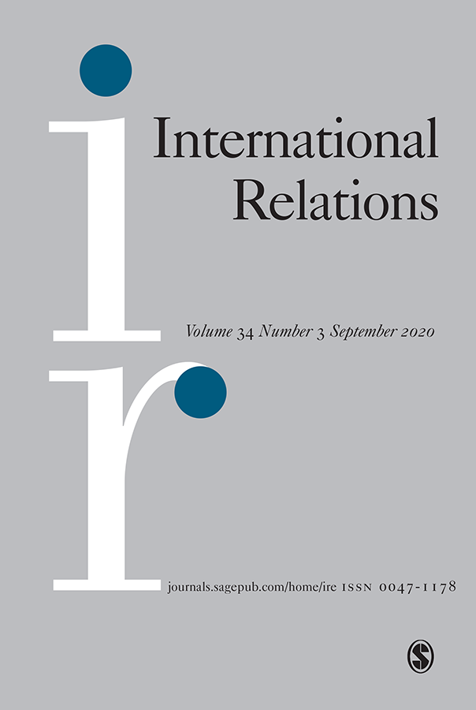

收录于合集 #新刊速递 123个


期刊简介

International Relations（《国际关系》）是国际关系领域的顶尖期刊之一，由SAGE出版社与大卫·戴维斯纪念研究所(David Davies Memorial Institute)联合出版编辑，其2019年的影响因子为1.25。本期为特别专题，主题为：面向人类互联：展望未来的国际关系（Facing Human Interconnections: Thinking IR into the Future）。
本期编委
【编译】 赵怡雯 杨稚珉 吴天麟 李源
【审校】 赵怡雯 杨稚珉 吴天麟 李源
【排版】 张湘苹

本期目录
1. Climate science, the politics of climate change and futures of IR
气候科学，气候变化下的政治和国际关系的未来
2. Internet of Things, cybersecurity and governing wicked problems: learning from climate change governance
物联网、网络安全和治理极端难题：气候变化的治理经验
3. Between concepts and thought: digital technologies and temporal relationality
概念与思想：数字科技与社会政治用语的时态关系
4. From geopolitics to geotechnics: global futures in the shadow of automation, cunning machines, and human speciation
从地缘政治到地缘技术：自动化、机器与人类形态下的全球未来
01
气候科学，气候变化下的政治和国际关系的未来
【题目】 Climate science, the politics of climate change and futures of IR
【作者】 Richard Beardsworth，利兹大学国际政治系教授。
【摘要】 本文从政治层面出发，讨论应对气候变化的经验主义挑战和当前来自气候科学的呼吁(到2050年世界实现碳中和)所必须的因素。本文的基本论点是，在众多国家和国际行为体中，仍需要能够成功推动气候变化政治化的国家。如果没有国家的强力支持和作为一个政治实体所具备的能力来推动行为上的变化，就无法在迫切的时间内大范围缓解和适应气候变化。本文展现了这一论点如何避开新民族主义和国际主义的对立，使两者走向合作。文章表明如果该论点切实有效，那么国际关系学科则更需关注气候挑战，重新引入传统的国家思想，并在未来几十年的学科研究和教学中培养一种特定的性格或心态：坚定的乐观主义。
This article considers what is necessary politically to respond to the empirical challenge of climate change and to the present calls of climate science (a carbon-neutral world by 2050). Its basic argument is that, among an array of national and international actors, it remains the state that can drive a successful politics of climate change. Without the heavy-lifting of the state and the state’s ability as a national entity to motivate behavioural change, neither the daunting scale nor imminent time-horizon of climate mitigation and adaptation is possible. The article shows how this specific argument, far from pitching anew nationalism against internationalism, can bring the two presently polarized movements together. The article then suggests that if these arguments are essentially valid, the discipline of International Relations needs to focus much more on the climate challenge, re- engage with its traditions of thought on the state and help harbour a specific disposition or mindset in the research and teaching of the discipline for the next decades: a fierce optimism.
【编译】 赵怡雯
【校对】 杨稚珉
02
物联网、网络安全和治理极端难题：气候变化的治理经验
【题目】 Internet of Things, cybersecurity and governing wicked problems: learning from climate change governance
【作者】 Madeline Carr（玛德琳·卡尔，伦敦大学学院网络安全和全球政治教授），Feja Lesniewska（费娅·列斯涅夫斯卡，伦敦亚非研究院SOAS的高级教学研究员）。
【摘要】 物联网（IoT）的应用对于世界经济论坛创造的“第四次工业革命”至关重要，物理网络系统的技术革命将模糊物理、数字和生物领域之间的界限，带来新的互联模式，从而对传统关系与治理模式产生挑战。然而，物联网的核心特征在于其使网络安全的含义不再抽象。同时，物联网的种种效应也使我们回归到国际关系领域中的物理效应。由此产生的合作与协调挑战本质上是跨界的，会发生在多层面的不同部门或是机构之间，甚至还将以复杂且高度政治化的方式影响所有的公共和私人行为体。本文中，作者认为全球气候治理的进步之处在于为现有的国际秩序提供了一种基于共识性规则的早期模型，该模型为推动敏捷、灵活和多中心主义提供了空间，并以此满足“极端难题”的需求，而物联网中存在的网络安全隐患正属此类问题之一。其中，强大的知识交流机制，尤其是技术界与政界的交流，或许是能从气候治理中习得的最重要经验之一。
The implementation of the Internet of Things (IoT) is central to what the World Economic Forum has coined the ‘Fourth Industrial Revolution’; a technological revolution built upon cyber- physical systems that will blur the lines between the physical, digital and biological spheres. Novel interconnections will emerge as a result, challenging traditional relations and modes of governance. However, a central feature of the IoT is that the implications of cyber (in)security are no longer abstract. The IoT also returns us to the world of kinetic effects in international relations; more familiar territory for IR. The resulting cooperation and coordination challenges are transboundary in nature, occur at multiple levels across sectors, between institutions, and will impact all actors, both public and private, in complex, often highly politicised ways. In this article we argue that advances in global climate governance appear to be offering an early model of a consensual rules-based approach within the existing international order that provides space for advancing agility, flexibility, and polycentrism to meet the demands of ‘wicked problems’ like the cybersecurity of the IoT. Perhaps one of the most important lessons to be drawn across from climate governance is the role of robust mechanisms for knowledge exchange – specifically between the technical and policy communities.
【编译】 杨稚珉
【校对】 吴天麟
03
概念与思想：数字科技与社会政治用语的时态关系
【题目】 Between concepts and thought: digital technologies and temporal relationality
【作者】 Oliver Kessler ，德国埃尔福特大学国际关系教授，Marc Lenglet，法国诺欧商学院战略与创业学部副教授。
【摘要】 本文认为数字科技加速的种种实践也影响了社会理论的关键概念。数字科技不仅催生了新的概念，更重构了社会政治理论的各种概念性词汇。最关键的是，此次数字化加速浪潮重整了政治概念的空间和时间维度。因此，此前强调权威、等级或关系空间上特质的定义低估了时态移动的影响。本文追寻社会政治思想从空间到时间的转移，并描绘了时态关系性如何逐渐冲击我们习以为常的象征和意象。
This article advances the argument that the acceleration of practices introduced by digital technologies also impact key concepts of social theory. Digital technologies not only give rise to new concepts, but they also reconfigure our entire socio-political conceptual vocabulary. In particular, this acceleration reorganizes the relationship between the spatial and temporal dimensions of political concepts. As a consequence, our spatially defined understanding of authority, hierarchy or relation underestimates the repercussions of shifting temporalities. This article pursues this shift from space to time and outlines how temporal relationality is gradually impacting the representations and images we live by.
【编译】 吴天麟
【校对】 李源
04
从地缘政治到地缘技术：自动化、机器与人类形态下的全球未来
【题目】 From geopolitics to geotechnics: global futures in the shadow of automation, cunning machines, and human speciation
【作者】 Jairus Grove，夏威夷大学马诺阿分校助理教授。
【摘要】 本文为有关“第四次工业革命”和“第三次抵消战略(third offset)”的讨论提供了另一种未来。本文认为，即使是对现有（技术）趋势的保守预测，也足以改变地缘政治的语法或生态，以及竞争与灾难的动力。这种变化比行为体之间如何不同，或者哪个大国在一百年后会塑造国际秩序的问题更为重要。本文试图理解非人类能力的破坏性变化对塑造未来潜在的地缘政治意味着什么。在更普遍的意义上，作者思考了暴力将如何以不同的方式分布。在一个由机器与数字组成的全球系统中，是否会出现新的竞争来源，甚至是独特的竞争类型，这对我们理解国际关系又有什么启示？
This exploration provides an alternative future to that offered in the discussions surrounding what is often referred to by the ‘fourth industrial revolution’ or the ‘third offset’. I argue that even modest projections of existing trends have the capability of altering the grammar or ecology of geopolitics as well as the drivers for competition and catastrophe. Such changes are more significant than questions of how this or that actor might be different or which great powers may shape the international order in a hundred years. The essay seeks to understand what disruptive changes in non-human capability might mean for the shape of a potential geopolitics to come. In a more general sense, I want to think about how violence will be distributed differently. Will there be new sources and even kinds of competition unique to a global system populated and in some cases, structured by cunning machines – some mechanical, others digital – and what are the implications for how we imagine international relations?
【编译】 李源
【校对】 张曼娜

国政学人
支持学术公益与知识传播
微信扫一扫赞赏作者 __赞赏
已喜欢，对作者说句悄悄话
取消 __
发送给作者
发送
最多40字，当前共字
上一页 1/3 下一页
长按二维码向我转账
支持学术公益与知识传播
受苹果公司新规定影响，微信 iOS 版的赞赏功能被关闭，可通过二维码转账支持公众号。